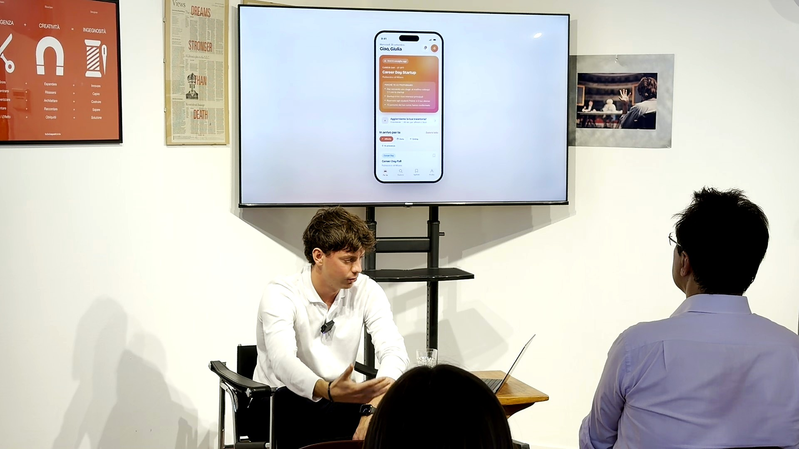
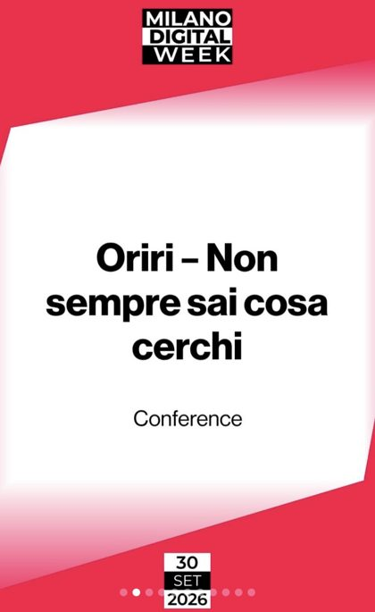

Problem
Events, programs and openings for students are scattered across dozens of channels. Most students hear about them too late.
Discovery
Validated the problem with qualitative interviews and a survey distributed nationally.
Product
Defined the concept and a two-sided model: free for students, paid by universities, companies and event organizers.
Traction
Cold outreach to academic advisors and institutional partners. Selected for Milano Digital Week 2026, where I demoed the app prototype live on 30 September.
ConLab
Selected for the 10th edition of ConLab, Università Cattolica's startup space: a six-month program of training, one-to-one mentorship and networking with the innovation ecosystem.
Next
The matching algorithm, then launch.